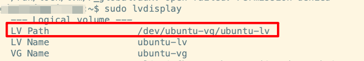

Ubuntu LVM（逻辑卷管理）使用
从Ubuntu 18.04 LTS开始，安装程序在分区时默认提供“使用LVM”的选项，但并不是默认选中。用户需要手动选择使用LVM。在Ubuntu 20.04 LTS及更高版本中，安装程序提供了更高级的“高级分区”选项，其中可以明确设置分区大小和LVM配置。
- Ubuntu LVM使用时间线
Ubuntu 18.04 LTS (2018) → 开始更广泛使用 LVM Ubuntu 20.04 LTS (2020) → LVM 成为服务器版常见选择 Ubuntu 22.04 LTS (2022) → 在更多场景默认使用 LVM
LVM 普及趋势：从 Ubuntu 18.04 开始越来越常见，服务器版更普遍：服务器安装更倾向于使用 LVM。
LVM是一种用于Linux的逻辑卷管理器，它允许你管理磁盘驱动器和其他大容量存储设备。使用LVM，你可以将多个物理磁盘或分区组合成一个卷组，然后从该卷组中创建逻辑卷。逻辑卷可以像普通分区一样使用，但它们具有更灵活的特性，例如可以动态调整大小、跨多个磁盘等。
LVM结构如下图所示：
物理卷 (PV) → 卷组 (VG) → 逻辑卷 (LV) ↑ ↑ ↑ 磁盘分区 多个PV组合 实际使用的卷
（后面用到的命令, PV、 VG、LV分别表示 对应查看磁盘对应的LVM命令信息 ）
在服务器安装过程中（以 24.04服务版为例），LVM是默认选项。
在图片中可以看到，默认是"Set up this disk as an LVM group"
系统安装成功后，可以查看磁盘信息。
1
2#查看磁盘使用信息
df -h
安装过程中，磁盘是50G， 但是看到磁盘的信息加起来不到50G， 而且/dev/mapper/ubuntu–vg-ubuntu–lv 只有24G。那剩余的磁盘去哪里了呢。
1 | |
在图片中可以看到 /dev/sda3 有48G, 磁盘50G是没有问题的。只是使用的只有24G（/dev/mapper/ubuntu–vg-ubuntu–lv）。
查看LVM信息
1
2
3
4
5
6
7
8
9
10
11# 扫描物理卷
sudo pvscan
# 显示物理卷详细信息
sudo pvdisplay
# 显示卷组
sudo vgdisplay
# 显示逻辑卷
sudo lvdisplaypvscan 可以看到磁盘信息
pvdisplay 可以看到 total PE 是12287 , Free PE 6144, Allocate PE 6143, 那么少的24G 就是 free PE
vgdisplay 命令可以看的更清楚， Free PE 24GB, df -h 少的24G找到了。 Alloc PE 24GB就是 df -h 看到的磁盘空间。
lvdisplay 可以看到 逻辑卷的具体信息，分配的空间是24G, 逻辑卷的路径、名称、卷组的名称等等
上面的命令可以加参数
1
2
3
4# 查看 ubuntu-vg 卷信息
sudo vgdisplay ubuntu-vg
# 查看 /dev/sda3 的磁盘信息
sudo pvdisplay /dev/sda3lsblk 和 blkid 是 Linux 中用于查看块设备（如硬盘、分区等）信息的两个常用命令，可提供设备名称、大小、文件系统类型、挂载点等详细信息。
lsblk 命令结果
blkid命令结果
已分配的磁盘空间用尽，系统不会自动扩展（不会自动把未分配的磁盘进行空间扩展），需要手动处理。
不进行自动扩展的原因：
- LVM 设计原则：LVM 需要明确的管理员操作确认
- 文件系统独立性：逻辑卷扩展和文件系统调整是两个独立步骤
- 风险控制：自动扩展可能导致数据损坏或系统不稳定
将未使用的空间进行扩展
1
2
3
4
5
6
7
8
9
10
11
12
13
14
15
16
17
18
19
20# 1. 检查当前空间状况（确认问题）
df -h
sudo vgdisplay ubuntu-vg
# 2. 扩展逻辑卷（使用部分或全部空闲空间）
# 扩展10G：
sudo lvextend -L +10G /dev/ubuntu-vg/ubuntu-lv
# 或者扩展所有空闲空间：
sudo lvextend -l +100%FREE /dev/ubuntu-vg/ubuntu-lv
# 3. 调整文件系统大小
# 对于ext4：
sudo resize2fs /dev/ubuntu-vg/ubuntu-lv
# 对于xfs：
sudo xfs_growfs /
# 4. 验证扩展结果
df -h
扩展逻辑卷后必须执行
sudo resize2fs /dev/ubuntu-vg/ubuntu-lv逻辑卷扩展和文件系统调整是 两个独立的操作：
- 逻辑卷扩展 (lvextend) 只是扩大了"容器"的大小
相当于给房子扩建了房间
但文件系统还不知道这个变化
- 文件系统调整 (resize2fs) 让文件系统识别并使用新的空间
相当于告诉家具可以摆放到新扩建的房间
必须执行才能实际使用新空间
在执行 lvextend 和 resize2fs 命令时，后面的 路径就是 lvdisplay显示的 LV Path。

空间扩展成功，并且 重新调整文件系统大小后，再用df -h或者 df -hT查看，就发现可用空间已经变大了。
综上，LVM的基本使用就没有什么问题了。